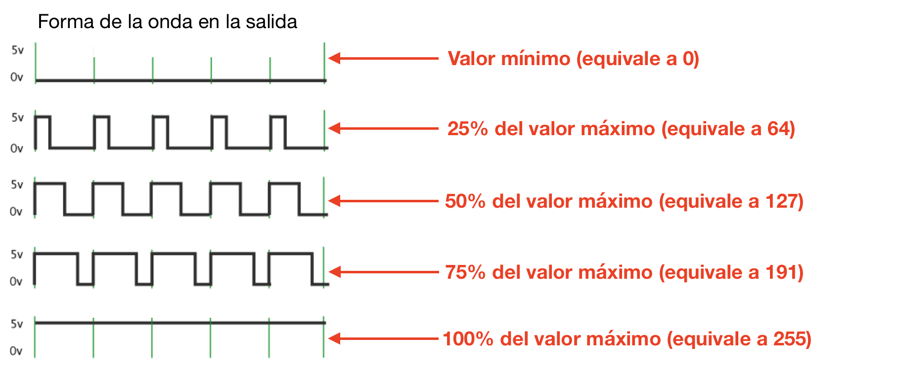
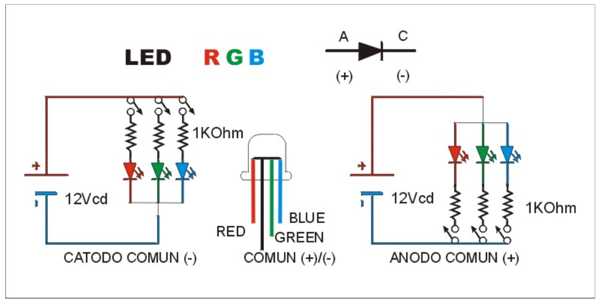
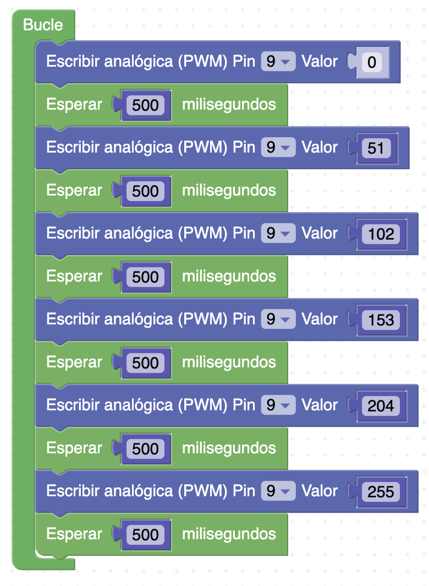
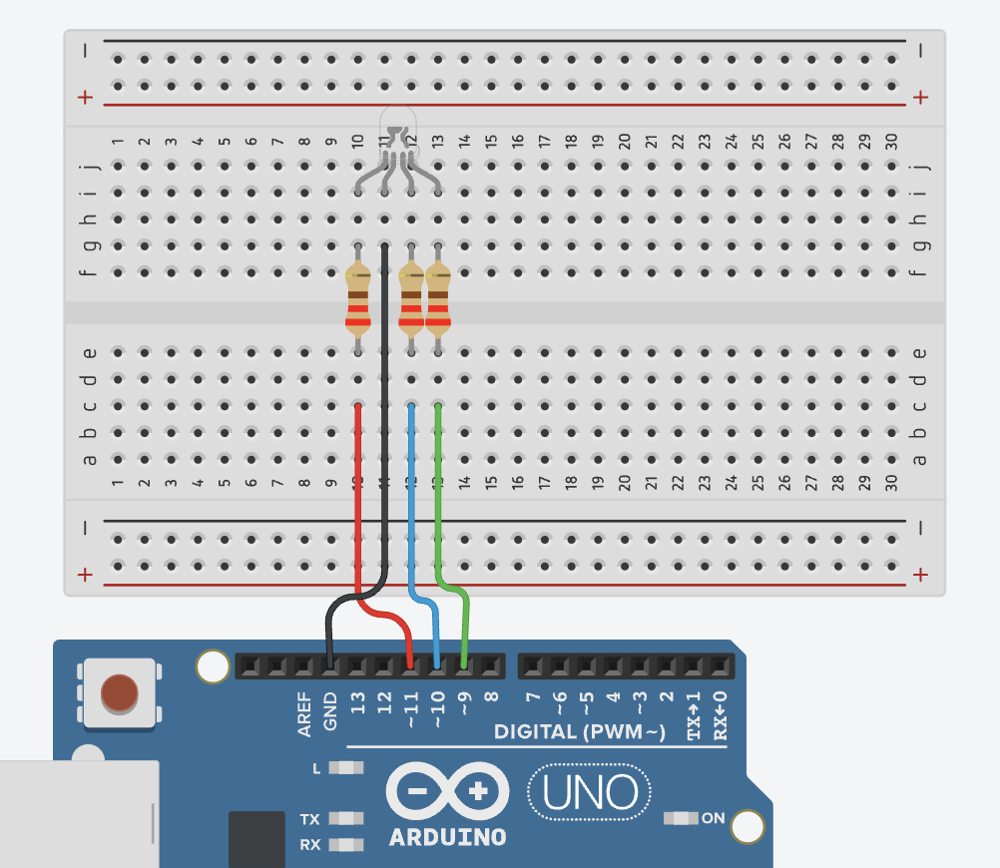

Más que encender: graduar
Con una salida digital un LED solo puede estar encendido o apagado. Pero ¿y si queremos que brille a media luz? Para eso usamos PWM (modulación por ancho de pulso): la placa enciende y apaga el pin muchísimas veces por segundo; si está más tiempo encendido, el LED se ve más brillante. Nuestro ojo lo percibe como un brillo intermedio.

Idea clave
En Arduino, un valor PWM va de 0 (apagado) a 255 (máximo). Solo
algunos pines pueden dar PWM: los marcados con el símbolo ~ (3, 5, 6, 9, 10 y 11).
El LED RGB del shield está conectado a tres de ellos.
El LED RGB del shield
Un LED RGB es en realidad tres LEDs en uno: rojo, verde y azul. Combinando el brillo (PWM) de cada color se consigue casi cualquier color. En el shield está conectado así:
| Color | Pin del shield |
|---|---|
| Rojo (R) | 9 |
| Verde (G) | 11 |
| Azul (B) | 10 |
⚠️ Fíjate bien: el verde va al 11 y el azul al 10. Si tus colores salen «cambiados», casi seguro que es esto.

Práctica guiada · Colores y brillo
Parte 1 — Secuencia de colores. En el Bucle, escribe con bloques Escribir analógica (PWM):
- Rojo a tope: pin 9 = 255, pines 11 y 10 = 0. Espera 1 s.
- Verde a tope: pin 11 = 255, pines 9 y 10 = 0. Espera 1 s.
- Azul a tope: pin 10 = 255, pines 9 y 11 = 0. Espera 1 s.
Sube el programa: el RGB del shield rota rojo → verde → azul.
Parte 2 — Brillo gradual (fade). Deja solo el canal rojo y hazlo subir de 0 a 255 poco a poco con un bucle. Este es el patrón de bloques (en el shield, usa el pin 9):

Resultado esperado: el rojo se enciende gradualmente, como un amanecer.
Abre el capó · El RGB por dentro (TinkerCAD)
Monta en TinkerCAD, en un circuito llamado S5 gemelo, un LED RGB en la protoboard: el cátodo común a GND y cada color, con su resistencia de 220 Ω, a su pin del shield (rojo→9, verde→11, azul→10). Te quedará parecido a esto:

Pega el mismo código de la parte 1 y simula: los colores rotan igual que en el shield. (En TinkerCAD, pasa el ratón por las patas del RGB para identificar cada color.)
Tarea B1 · Respiración de color
Programa el canal que quieras del RGB para que suba de brillo de 0 a 255 y vuelva a bajar a 0, en bucle (efecto «respiración»). Pista: dos bucles contar con, uno subiendo y otro bajando, con una espera pequeña (10 ms) dentro. Hazlo en un proyecto llamado B1 respiración, graba el resultado como b1_respiracion.mp4 y añádelo a la tarea «Tareas de Arduino (S2–S7)».
Tarea B2 · Semáforo de verdad
Convierte el RGB en un semáforo: rojo (3 s) → verde (3 s) → ámbar (1 s), en bucle. El ámbar no existe como color del LED: tendrás que mezclarlo (rojo a tope + verde a medias, prueba valores). Hazlo en un proyecto llamado B2 semáforo RGB y añade a la tarea «Tareas de Arduino (S2–S7)» la captura de bloques como b2_bloques.png y el vídeo del shield (papelito de iniciales y curso) como b2_semaforo_rgb.mp4 — recuerda: sin «Entregar» aún.
Reto (opcional)
Consigue el naranja, el morado y tu color favorito mezclando valores de los tres canales. Anota qué valores de 0 a 255 has usado para cada uno: los necesitarás si tu sistema propio (S10) usa colores.
Verdadero o falso
Responde todas las preguntas del cuestionario.
00:00: